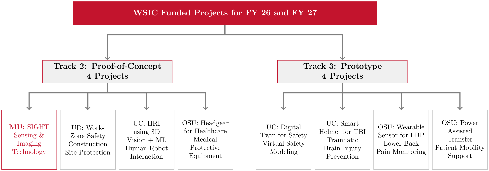
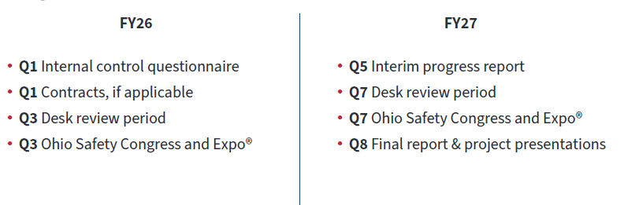
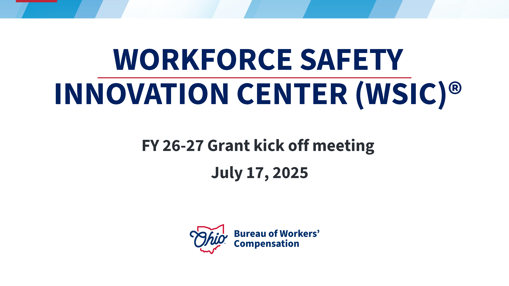
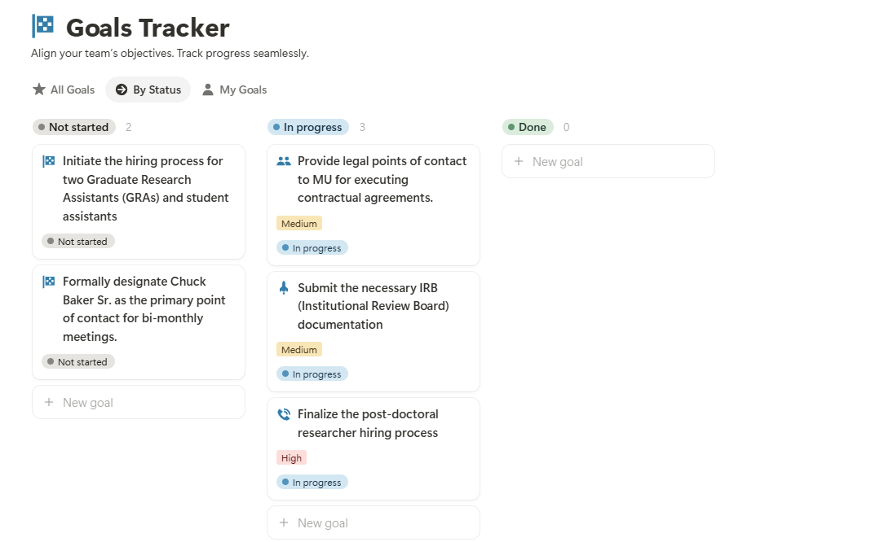
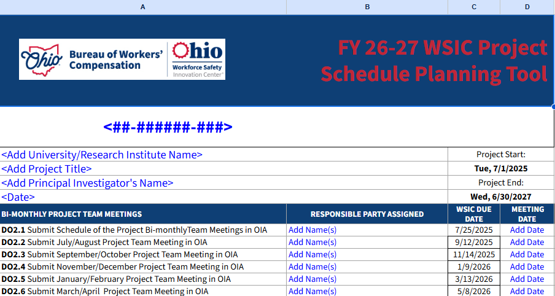

SIGHT: Safety Immersion and Gamified Hazard Training for Industry 5.0
Meeting 02: The BWC’s Kickoff Meeting, Recruitment, Contracts, IRB and Plan Ahead
July 01, 2025
Meeting Goals
▸ Review and approve Meeting 01 minutes and action items
▸ Update the full team on project progress and milestones
▸ Share developments from the BWC Kick-Off and budget finalization
▸ Provide status updates on recruitment, procurement, IRB, and Notion tracker
▸ Confirm the structure for bi-monthly meetings going forward
▸ Collaboratively plan deliverables for the BWC project schedule
▸ Outline next steps and assign new action items
Attendance Sign In Sheet as Required By BWC
02:00 Alternatively, you can also click here to sign in!!
Recap: Kickoff Meeting (July 01, 2025)
▸ Project Vision: Leverage VR + AR for safety training in Industry 5.0
▸ Team Introductions: Roles outlined across MU, UB, MaxByte, MeetKai, Cincinnati Radiator
▸ Deliverables & Timelines: Reviewed BWC-required documentation and reporting deadlines
▸ Tech Deliverables (Q1): Machine documentation + tagged image database (Due Oct 2025)
▸ Communication: Google Suite for sharing, Notion for PM, POCs confirmed
▸ Immediate Next Steps: Focus on hiring, IRB submission, and legal contracting
Recap: Action Item Status
| Status | What | Due Date | Who | Notes |
|---|---|---|---|---|
| 🟩 | Provide legal POCs | Jul 08 | MaxByte | Submitted |
| 🟩 | Provide legal POCs | Jul 08 | MeetKai | Submitted |
| 🟩 | Designate Chuck Baker Sr. as POC | Jul 08 | Cincinnati Radiator | Confirmed |
| 🟩 | Finalize post-doc researcher hiring | Jul 15 | Co-PIs | Completed |
| 🟨 | Submit IRB documentation | Jul 15 | Jay Shan | Missing CITI training |
| 🟩 | Distribute poll for next meeting | EOW | Mohamed Farrag | Completed |
| 🟩 | Begin hiring: GRAs & student assistants | Aug 01 | Co-PIs | Students selected |
BWC Kick-Off Meeting Updates
WSIC Grants Overview
Supports R&D of innovations in PPE & safety tech
Total funding (FY26–27): $13.59M
Project Period: July 1, 2025 – June 30, 2027
Track Summary:
- Track 1: 0 projects
- Track 2: 4 Proof-of-Concept
- Track 3: 4 Prototype
- Track 1: 0 projects
100% base funding with reimbursement by deliverables
No carryover of unspent funds between years
Funded Projects for FY26 and FY27
Requirements: Deliverables
| FY | Quarter | Objectives | ||
|---|---|---|---|---|
| FY26 | Q1 | 5 | ||
| FY26 | Q2 | 4 | ||
| FY26 | Q3 | 4 | ||
| FY26 | Q4 | 3 | ||
| FY27 | Q5 | 3 | ||
| FY27 | Q6 | 3 | ||
| FY27 | Q7 | 4 | ||
| FY27 | Q8 | 7 |
These adminstrative deliverables capture:
- Collaboration meetings (agendas, attendace, slides, and minutes)
- Quarterly progress reports
- Invoices & receipts
Requirements: Expenditure Report and Invoices
| Quarterly Report Period | Expenditure Report and Invoice Due Date |
|---|---|
| July 1 – September 30, 2025 | October 31, 2025 |
| October 1 – December 31, 2025 | January 30, 2026 |
| January 1 – March 31, 2026 | May 1, 2026 |
| April 1 – June 30, 2026 | July 31, 2026 |
| July 1 – September 30, 2026 | October 30, 2026 |
| October 1 – December 31, 2026 | January 29, 2027 |
| January 1 – March 31, 2027 | April 30, 2027 |
| April 1 – June 30, 2027 | July 30, 2027 |
Note: Recipients may invoice for remaining outstanding unobligated balances after the fourth quarterly expenditure report and on the Final Expenditure Report, provided these obligations were incurred prior to the end of the project period and fall within the unobligated balance on the expenditure report. Specific requirements for Quarterly Invoices and Quarterly Expenditure Reports can be found in the WSIC GAPP Manual. We will also provide additional detail pertaining to these reports after we attend the sponsor’s kick-off meeting on July 17, 2025.
Requirements: Milestones
Post Submission Requirements
Safety Congress (2026, 2027): Posterboards required
IRB Approval: Due within 10 business days of IRB approval
Key Personnel Changes: Notify WSIC within 2 weeks of any changes
- Email: BWCWSIC@bwc.ohio.gov
- Include:
- Project number & title
- New personnel info (name, role, start date)
- Personnel to remove (removal date)
- Biosketches for new personnel
- Email: BWCWSIC@bwc.ohio.gov
BWC Kick-Off Meeting’s Slide Deck
Note: The PDF version of the BWC slides are available in our Shared Google Drive. Please click here to access.
Budget Update
Equal Budgets for FY 26 and FY 27
The BWC has equally splitted our entire project budget across FY 26 and FY 27.
Implications:
- None on the two contractors (MaxByte, MeetKai), and the consultant (Lora Cavuoto).
- No impact on the Discovery Center.
- No impact on any faculty but the PI.
- Change in distribution of undergraduate students and GRAs hired over the two fiscal years.
- None on the two contractors (MaxByte, MeetKai), and the consultant (Lora Cavuoto).
Potentially, a very minor impact to budget lines (Paula Murray, Mo Farrag, Fadel and M. Mayyas) will ensure that the BWC’s budget revisions and addendum policies will be followed.
Recruitment and Additions to the Project Team
Visual Mapping of the Personnel and Industry Partners

Post-Doc Recruitment Updates
Position search: JR102485 Postdoctoral Fellow – Digital Manufacturing and Artificial Intelligence (Published on 05/29/2025).
Applicants:
- 67 (57 rejected due to not having a PhD Degree).
- 10 eligible applicants with diverse degrees in: mechanical engineering, electrical engineering, industrial engineering, computer science, …
- 67 (57 rejected due to not having a PhD Degree).
Committee Met and selected top 3 candidates for zoom interviews.
After the zoom interview, an initial offer was made to **Ibrahim Yousif (PhD, Mechanical Engineering, U. South Carolina).
MU: Ibrahim Yousif (Post-Doc)
Role at Miami: Postoctoral Research (Expected Aug 01, 2025)
SIGHT Project Role: Conduct applied research for the development, testing, and deployment of AI-driven safety systems. Support the project through publications, reporting, and research dissemination.
Expertise: Autonomous manufacturing systems, Safety 4.0, computer vision, predictive analytics, and digital twins.
Why does this work matter to me? I believe the rise of smart manufacturing demands parallel advancements in safety protocols and workforce training, and that initiating AI-driven training and safety systems is crucial for overcoming cultural resistance and safety concerns, paving the way for broader industry acceptance and adoption.
MU: Michael Wise (Graduate Research Assistant)
Role at Miami: Graduate Research Assistant, Mechanical Engineering (Expected Aug 18, 2025)
SIGHT Project Role: Compile documentation, experimental setup, set up tooling, and assist with any manufacturing-related research activities in the Hamilton campus.
Expertise: Operating subtractive manufacturing machines, CNC, and the Cobot.
Why does this work matter to me? I am excited about seeing the integration of AI and XR to improve the safety of operating manufacturing equipment.
MU: Austin Hamilton (Student Assistant)

- Role at Miami: Graduate student in Computer Science and Software Engineering
- SIGHT Project Role: Student Assistant – supports software development and XR system testing
- Technical Expertise: Unity, C#, C++, Avalonia UI, and shader development
- Academic Interests: Reverse engineering, systems programming, and 3D rendering.
- Expected Starting Date: Aug 18, 2025.
MU: Ryan Singh:(Student Assistant)

- Role at Miami: Rising senior about to start his MSBA
- SIGHT Project Role: Student Assistant – supports RAG development
- Technical Expertise: Python and R.
- Academic Interests: ML, GenAI, and RAG.
- Expected Starting Date: Aug 18, 2025.
MU: Amanda White:(Student Assistant)

- Role at Miami: Business Analytics Senior with a minor in Digital Marketing,
- SIGHT Project Role: Student Assistant – supports RAG and Applied AI R&D
- Technical Expertise: Python and R.
- Academic Interests: Big Data, GenAI, and RAG.
- Expected Starting Date: Aug 18, 2025.
Other Updates
Partners’ Contracts
Points of contacts for the company representatives have been received.
MU is currently going through its internal processes to send out the contracts.
MU IRB Application Process and Update
Notion: Internal Tracking (In Progress)
Confirming Meeting Structure
Bi-weekly meetings at 11:00 AM (every other Friday).
MU personnel to meet in FSB 3097 (whenever possible), and to be joined by Zoom by non-MU personnel.
Working Session (PIs and PM) to Fill in the Schedule Planning Tool
Schedule Planning Tool
Link: The tool is available here.
Open Discussion
What questions, concerns, or ideas do you have so far?

Project funded by the Ohio BWC through their Worker Safety Innovation Center